What is ElDewrito?
ElDewrito is a free modification for Halo Online, which was a Halo on PC video game developed by Saber Interactive and canceled by Microsoft in 2015. ElDewrito completely reimagines Halo Online to bring you a fan-made Halo experience.
The original ElDewrito team disbanded in 2018 with the release of v0.6.1.0 after the team announced an indefinite pause to development.
ElDewrito 0.7 was released by a new team in 2024 with new content and significant improvements. A full changelog is available here.
ElDewrito has an active playerbase that primarily organises games through HaloBase on Discord.
Installing ElDewrito
Windows Installation
- Download the ElDewrito Launcher | Virustotal
- Run the Launcher (do not run as administrator).
- Ignore Windows Smartscreen if prompted. 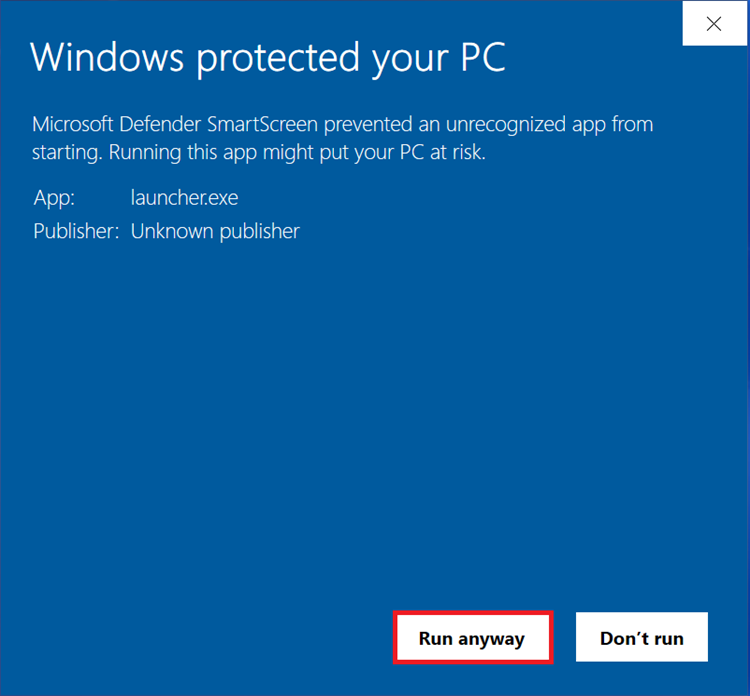
- Click Next. 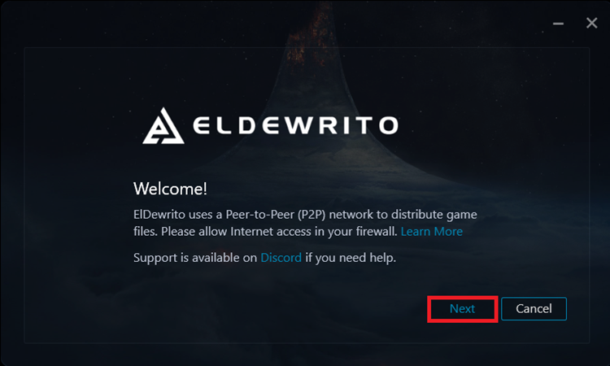
- Wait for the Launcher to find the latest version.
- Select your install location then click Install. We recommend your desktop folder.
- Wait for the launcher to download and install ElDewrito.
- Click Play on the welcome screen after installation is complete. 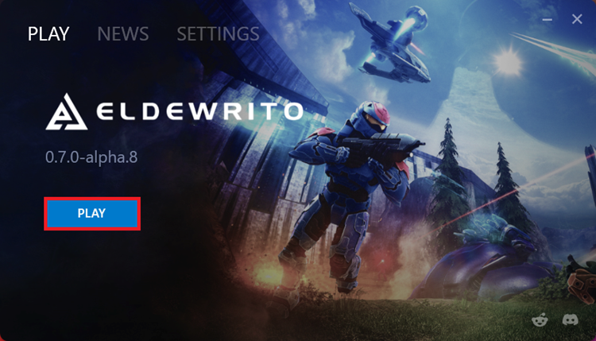
- Enjoy!


Remember to seed to support the game’s distribution network. Seeding Guide.
Join HaloBase and get yourself the LFG role in #welcome to find other players.
Modpacks are available at our Modpacks Discord server.
Mac OS Installation
- Install GPTK (Game Porting Tool Kit)
- Download the ElDewrito Launcher | Virustotal
- Download .NET 6.0.2 Installer
- Extract all files to the GTPK directory (default name is my-game-prefix)
\Users~\my-game-prefix\Program_Files - Run the .NET installer through the GPTK terminal.
gameportingtoolkit~/my-game-prefix 'C:\Program_Files\windowsdesktop-runtime-6.0.32-win-x64.exe' - Run the ElDewrito Launcher — install to Program_Files directory
gameportingtoolkit ~/my-game-prefix 'C:\Program_files\launcher.exe - Go into the ElDewrito folder, open data/dewrito_prefs.cfg and set Game.CEFGpuEnable to 0. Create dewrito_prefs.cfg if it does not exist
- Run Halo Online with the no-esync prefix
gameportingtoolkit-no-esync ~/my-game-prefix 'C:\Program Files\ElDewrito\eldorado.exe'
Note: If you have a controller or gamepad, you will need to plug it in before launching ElDewrito.
Credit to @sahuntermech on Discord for the Mac OS guide.
Linux Installation
- Download the ElDewrito Launcher | Virustotal
- Install and Open Lutris.
- Click the Plus Sign in the Top Left.
- Select Install a Windows game from an executable.
- Enter a name for the install (ElDewrito or Halo Online would both be optimal).
- Select Install.
- Click Setup File then Install.
- Select the folder where you wish to install ElDewrito.
- Find the location where you saved your launcher.exe and Select it, then click Install.
- Lutris will now start the installation process
- Install as usual, just keep the default location because it's all going to be installed to the location that you selected earlier
- Start and Close the Game
- Close the Launcher and go back into Lutris
- Right Click Configure, then Game Options
- For the Executable option, Select the launcher.exe that Lutris installed. It should be in the path:
(installation folder)\drive_c\users\(user_name)\Desktop\ElDewrito\launcher.exe - Click Save and close back to Lutris
- To add the game to steam, Right Click Create steam shortcut. Once you go back to Game Mode or restart Steam, the game should be there.
- Run ElDewrito through Steam and enjoy!
Credit to @thelongwayhome on Discord for the Lutris guide.
Steam Deck Installation
- Download the ElDewrito Launcher | Virustotal
- Open Steam settings.
- Navigate to the Compatibility header.
- Check Enable Steam Play for all other titles.
- Select Proton 8.0-5 from the drop-down menu.
- Click Ok then restart Steam.
- Add ElDewrito to your Steam library.
- Add the following as a launch option/argument for the ElDewrito Launcher’s properties in Steam:
DOTNET_BUNDLE_EXTRACT_BASE_DIR=.cache %command% - Run the ElDewrito Launcher through Steam then install .NET 6.0 Desktop Runtime (v6.0.36) to the ElDewrito Launcher’s directory when prompted.
- Run ElDewrito through Steam and enjoy!
Credit to @parmejuan. on Discord for the Steam/Proton guide.
Common Issues & Troubleshooting
Update Issues
- Place the latest ElDewrito launcher (16 May 2024) in your ElDewrito folder.
- Run the launcher.
- Go to Settings > Updates to force check for an update if it doesn't check itself.

If your launcher cannot find the latest ElDewrito version, torrenting is blocked on your network. You can bypass torrent restrictions by using a VPN service. Direct Message @duckfudge on Discord for additional support.
Stuck On Main Menu And Low Framerates/Poor Performance
Unzip the contents of this DXVK implementation into your ElDewrito folder with eldorado.exe.
Your game will stutter on the first run of any map and first load times will increase. You will have butter-smooth performance after restarting the game and loading the same map.
WARNING: Vulkan 1.3 support is required. ElDewrito will crash if your PC does not support DXVK — delete the files if this is the case.
Menus Are Not Working
Go to data\dewrito_prefs.cfg in your ElDewrito folder and change Game.CEFGpuEnable to 0 or add this line if it does not exist:
Game.CEFGpuEnable 0
Simple fix: Place this file in your ElDewrito folder with eldorado.exe.
Extreme Brightness
Enable CPU Exposure/Bloom Patch in Video Settings (Press HOME).
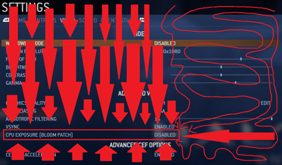Launcher Fails To Start And TorrentLib Error
Your PC is missing a dependency.
- General failure: Install this.
- Torrentlib error: Install this.
Network Issues
Your ISP may be blocking torrents. In this case, we suggest using a VPN like Cloudflare WARP or tethering your mobile data connection to your PC.
netsh advfirewall firewall add rule name="eldewrito-in" dir=in action=allow program="C:\ElDewrito\eldorado.exe"
netsh advfirewall firewall add rule name="eldewrito-out" dir=out action=allow program="C:\ElDewrito\eldorado.exe"
Replace C:\ElDewrito\ in the command with the path to your ElDewrito folder.
Use the same command with the path to the launcher if it cannot access the Internet.
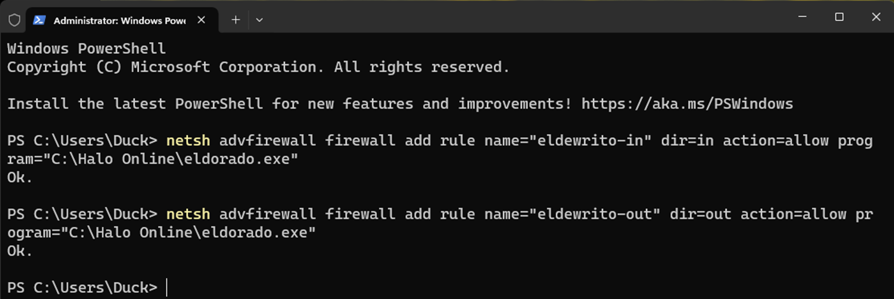IMPORTANT: If none of these solutions work, or you encounter an issue not listed here, ....
Seeding
Launcher
- Download the ElDewrito Launcher (Virustotal) and install the game.
- Go to Settings, then General then allow the launcher to start with Windows. 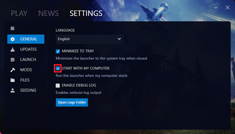
- Go to Settings, then Updates then set an update check interval and enable automatic updates. 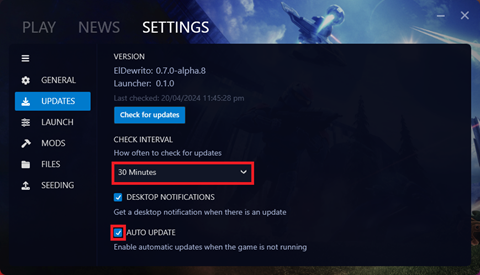
- Go to Settings, then Seeding then click on the gear (⚙️) icon. 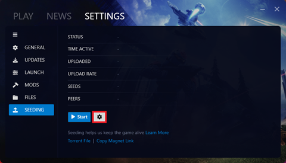
- Enable automatic seeding. 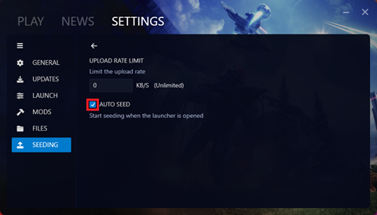
- Go back to Settings > Seeding then click ‘Start’. 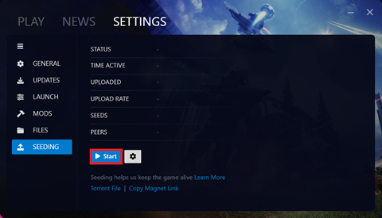
Torrent Clients and Seedboxes
- Go to Settings, then Seeding then click ‘Torrent File’. 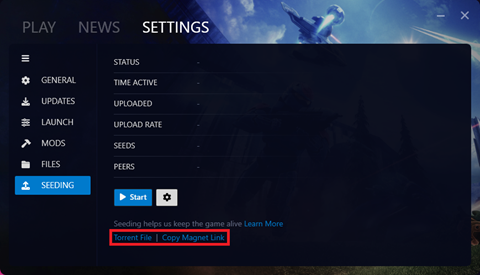
- The launcher will open a folder with a torrent file for the current version. Upload this file to your torrent client or seedbox. Alternatively, paste the magnet link. 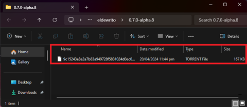
Server Hosting
Community Information
Content
You can find custom game modes, mod packs, and other community content at:
- ElDewrito Modpacks
- Killnothing’s Repository
- ZGAF Fileshare
Spaces
The most-active Discord communities for ElDewrito are:
- HaloBase
- ElDewrito Main
- ElDewrito Modpacks
- Halo Bois (Killnothing’s Server)
- Capybara Containment Cell
HaloBase/HB has a Looking-for-Group (LFG) role in its welcome channel that players ping for daily game sessions that often run for several hours.
Support & Resources
You can find support for ElDewrito on our Discord Server, Subreddit, and Website.
ElDewrito 0.7 was developed as a community effort over six years with contributions from 40+ members from all over the world. We give our most sincere gratitude to those members for their contributions, guidance, and support. ElDewrito 0.7 was possible through tireless effort, lulls & sprints, and determination to create an experience fit for the Halo franchise’s fans.
You can support ElDewrito by hosting servers and seeding.
Appendix
Current release version: 0.7.1
Release date: 16 May 2024
Changelog